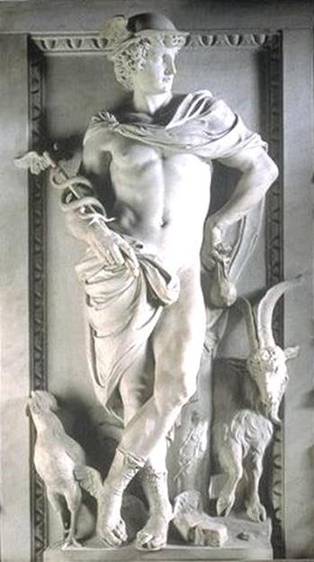

Trong số những vị thần Olympe thì Hermès là vị thần mà ngay khi mới ra đời tinh hoa đã phát tiết ra ngoài một cách khác thường. Có thể nói khôn ngoan, ranh mãnh, mưu mô, tinh quái là “tính trời vốn sẵn” của chú bé Hermès khi còn nằm trong nôi. Bố Hermès là thần Zeus, còn mẹ là nữ thần Maïa, một nữ thần chị cả của một gia đình có bảy chị em gái, gọi chung bằng một cái tên là: “Pléiades”115. Về bên nội của Hermès thì không có gì đáng kể. Nhưng về bên ngoại thì cũng cần phải kể qua chút ít để mọi người được rõ thêm về tông tộc của vị thần này. Ông ngoại Hermès là thần Atlas, một Titan đã phải chịu hình phạt giơ vai ra đội, chống cả bầu trời. Bà ngoại Hermès là Pléioné sinh được bảy con gái, mẹ Hermès, nữ thần Maïa là chị cả. Theo một chuyện xưa kể lại thì, khi được tin Atlas, cha mình, bị Zeus trừng phạt, các Pléiades đã buồn rầu đến nỗi không thiết sống nữa. Cả bảy chị em tự tử và sau khi chết biến thành một chòm sao có bảy ngôi liền nhau. Ngày nay những đêm quang mây người ta vẫn có thể nhìn thấy trên bầu trời phương Bắc chòm sao Pléiades. Nhưng có một chuyện lại kể không phải những Pléiades tự tử. Họ được thần Zeus biến thành sao để thoát khỏi sự theo đuổi của một chàng chăn chiên xinh đẹp, hiếu sắc tên là Orion. Chuyện về chàng Orion này thật là lắm chuyện. Chỉ biết cuối cùng chàng bị chết và biến thành chòm sao Orion. Nhưng chết rồi mà chàng ta vẫn không chừa cái thói trăng hoa. Vì thế trên bầu trời, Orion lúc nào cũng theo đuổi Pléiades. Ngày nay trong văn học thế giới, Pléiades là một biểu trưng chỉ một nhóm người tài năng kiệt xuất, đạo cao đức trọng, danh tiếng lẫy lừng116.

Nữ thần Pléiades Maïa sinh Hermès trong hang núi Cyllène ở đất Arcadie. Vừa mới ra đời chú bé Hermès đã trổ ngay cái tài... ăn cắp bẩm sinh của mình. Maïa hình như đoán biết được thiên bẩm của cậu con trai “quý tử” ấy cho nên đã lấy tã lót quấn bọc chặt chú bé lại. Nhưng sự lo xa, đề phòng của Maïa vô ích. Chú bé Hermès bức bối, khó chịu vì không được tự do nên đã cựa quậy, giãy giụa liên hồi để thoát ra khỏi cái cảnh “địa ngục” ấy. Và cuối cùng chú tự giải thoát được. Chú trèo ra khỏi nôi và bắt đầu đi du ngoạn. Chú đi khắp mọi nơi, mọi chỗ đến nỗi khó có một vị thần nào thông thuộc đường đi lối lại ở đất nước Hy Lạp như chú. Thôi thì từ đường núi đến đường biển, đường sông, khắp hang cùng ngõ hẻm nào trên đất nước Hy Lạp Hermès cũng biết, cũng từng đi qua. Sau khi đi chơi chán rồi Hermès đi đến Piérie, một thung lũng ở đất Macédoine. Tới đây Hermès gặp đàn bò của Apollon. Thật ra thì không phải đàn bò của Apollon mà là của nhà vua Admète. Apollon chỉ là người chăn bò cho nhà vua (Sao mà Apollon đưa bò đi chăn xa thế!). Nguyên do vì sao mà một vị thần lại phải đi chăn bò cho một người trần thế thì chúng ta hẳn đã biết khi nghe kể chuyện về cuộc đời của vị thần Apollon.
Hermès thấy đàn bò đang gặm cỏ ngon lành nhưng không thấy người chăn. Cậu ta liền nảy ra ý định... ăn cắp. Đúng vậy, ăn cắp! Hermès lừa lúc Apollon sơ ý đã lấy trộm mười hai con bò cái, một trăm con bê và một con bò mộng dắt đi (Có chuyện nói chỉ có 15 con bò cái). Nhưng lấy thì dễ còn đưa đi mới khó. Phải làm sao cho Apollon không biết, hoặc nếu có biết thì cũng không lần ra được dấu vết để mà truy tìm, đòi lại. Hermès bèn buộc vào mỗi đuôi con bò một cành cây rồi lùa chúng đi. Cành cây đó với túm lá lòa xòa như chiếc chổi, sẽ quét sạch mọi vết chân bò in trên mặt đường. Có người lại kể, Hermès còn tinh ma quỉ quái hơn, lấy guốc xỏ vào chân mỗi con bò rồi cầm đuôi bò kéo, bắt chúng đi giật lùi. Khá khen thay cho cái đầu óc thông minh của Hermès, chỉ tiếc cái là nó đã được sử dụng vào việc ăn cắp! Thần Apollon có tài thánh cũng không biết được bò của mình đi đâu. Hermès lùa đàn bò về đất Pylos thuộc vùng đồng bằng Péloponnèse. Công việc tưởng trót lọt. Ngờ đâu khi đi qua đất Béotie có một ông già tên gọi là Battos trông thấy. Lúc này trời đã về chiều. Sợ vỡ lở, vị thần Trộm cắp này bèn “hối lộ” cụ già:
- Này cụ ơi! Cụ làm ruộng vui vẻ thế kia mà không có lấy một con bò nó đỡ cho thì thật là khổ. Sao cụ không tậu lấy một con?
Ông già Battos dừng tay cuốc, trả lời chú bé:
- Chú bé chăn bò kia ơi! Chú giễu cợt ta đấy phải không? Chú tưởng tậu một con bò dễ lắm đấy hử? Hay chú thương lão già vất vả định bán rẻ cho lão một con đấy chăng? Chú có bán thì lão cũng chẳng có tiền mua đâu.
Hermès liền bày tỏ ý định:
- Con sẵn sàng biếu cụ một con bò thật béo thật đẹp, béo đẹp nhất trong đàn. Mà thôi, con cứ để tùy cụ chọn, cụ thích con nào cụ lấy con ấy, nếu cụ giúp con một việc, một việc rất nhỏ và dễ dàng thôi, chẳng phải dùng đến sức, cũng chẳng phải dùng đến tài, chẳng phải lo nghĩ tính toán gì hết.
Cụ già tròn mắt ngạc nhiên. Hermès ghé vào tai cụ nói vài lời. Cụ già vừa nghe vừa gật gật đầu tỏ vẻ ưng thuận.
- Cụ cứ ỉm đi chuyện cháu qua đây đi. Có ai hỏi gì cụ cứ bảo, tôi chẳng thấy gì sất, là yên chuyện. Cụ cứ bảo, tôi làm ruộng suốt từ mờ sáng đến tối mịt chẳng thấy có bò, bê nào qua đây cả. Người ta có gạn hỏi, cụ cứ trước, sau chỉ trả lời có thế... cụ cứ trả lời thế cho con nhờ.
Hermès dặn lại cụ già một lần nữa trước khi dắt bò đi. Hám lợi, cụ già Battos ưng thuận. Hermès dẫn bò đi. Đi được một quãng khá xa, vị thần quỉ quái tinh ma này thấy cần phải thử lại ông cụ già, xem cụ có thật tôn trọng lời hứa với mình không, có là người trung thực không. Hermès đưa đàn bò vào bên kia rừng giấu rồi thay hình đổi dạng, cải trang thành một khách bộ hành đứng tuổi. Và vị khách bộ hành này với dáng vẻ mệt mỏi và bỡ ngỡ đi tới chỗ cụ già Battos.
Anh ta cất tiếng hỏi:
- Cụ già kính mến ơi! Cụ làm ruộng gần bên đường dây, cụ làm ơn bảo giúp cháu: có một chú bé nào lùa đàn bò ấy đi qua đây không? Cụ ơi! Cụ chỉ cho cháu biết đàn bò đi nẻo nào thì cháu chẳng bao giờ quên ơn cụ đâu. Cháu sẽ biếu cụ một con bò đực và một con bò cái, một đôi bò thật đẹp không thể chê trách chỗ nào được. Ông già Battos phân vân một lát. Ông tính toán: mình mà được một đôi bò nữa thì bà lão nhà mình sung sướng hết chỗ nói. Gia đình mình đỡ vất vả biết bao. Tính toán như thế nên ông già sẵn sàng nuốt lời hứa, bội ước với thần Hermès:
- Có, ta có thấy, anh cứ đưa cho ta đôi bò ta sẽ chỉ cho.
Và Battos đã chỉ đường cho người khách bộ hành. Hermès tức giận ông già vô cùng. Thần quát lên:
- Lão già khốn kiếp này! Mi tưởng rằng mi có thể lừa đảo được cả Hermès con của đấng phụ vương Zeus chăng? Ta sẽ cho mi biết cái thói lá mặt lá trái phải trả giá như thế nào!
Nói đoạn Hermès biến cụ già Battos thành một tảng đá, một tảng đá bên đường nhưng câm tịt, câm như đá117 để làm gương cho người đời.
Hermès tiếp tục lùa đàn bò đi. Thần Apollon lúc này cũng chưa hay biết gì. Tới Pylos, Hermès giết hai con bò để tế các vị thần Olympe. Sau khi xóa hết mọi vết tích rồi giấu kỹ lũ bò ăn trộm được vào trong một cái hang sâu, chú bé Hermès lại trở về với cái hang của mình ở Arcadie. Vừa tới cửa hang, Hermès bắt gặp ngay một con rùa ở giữa lối đi. Chú liền nảy ra một ý nghĩ: làm một cái đàn. Thế là Hermès bắt con rùa, lột lấy mai rồi đem ruột của con bò căng lên trên cái mai đó (có chuyện kể gân bò). Cây đàn lia ra đời. Xong xuôi, Hermès bèn lặng lẽ chui luồn vào đống tã lót nằm, nằm im thin thít ở trong nôi ra vẻ như không có chuyện gì xảy ra.
Apollon đến lúc này mới biết bị mất bò. Thần đi tìm ngược xuôi, sớm tối khắp đồng trên bãi dưới mà chẳng thấy tăm hơi. Cuối cùng có một con chim tiên tri chỉ đường cho Apollon đến Pylos. Chỗ này có chuyện kể hơi khác. Ông già Battos hám lợi đã chỉ đường cho Apollon. Và sau này Hermès mới trừng phạt thói xấu đảo điên của cụ. Tới Pylos, Apollon cũng không sao tìm ra được đàn bò của mình. Vị thần có bộ tóc vàng quăn này có lần đã mò tới một cái hang và toan sục vào tìm. Nhưng nhìn xuống đất Apollon độc thấy dấu chân bò từ trong hang đi ra vì thế Apollon lại bỏ đi tìm nơi khác. Thì ra thần đã trúng mưu của Hermès. Lúc dồn bò vào hang, Hermès cầm đuôi chúng kéo, bắt chúng đi giật lùi.
Biết Hermès lấy trộm bò của mình nhưng không sao tìm được chỗ y giấu, Apollon đành phải đến gặp Maïa để nhờ Maïa can thiệp. Chẳng rõ Maïa có biết việc ông con của mình trổ tài “cầm nhầm” không, người thì kể rằng Maïa có biết nhưng tham của nên bênh con; người thì kể thực sự nàng không biết, nhưng vừa nghe Apollon trách mắng con mình ăn cắp là bà ta nổi tam bành lục tặc lên, sỉ mắng Apollon đã vu oan giá họa, đặt điều nói xấu con bà. Còn Hermès cứ nằm im thin thít trong nôi làm như không hề biết tí gì đến những chuyện lôi thôi rắc rối đó. Apollon nổi nóng, chạy đến bên cái nôi, dựng cổ Hermès dậy:
- Này ông mãnh! Ông đừng giả ngây giả điếc nữa đi! Muốn yên muốn lành thì trả ngay ta số bò nếu không thì đừng có trách! Ống tên của Apollon này vẫn còn đầy và dây cung chưa đứt đâu. Ta sẽ dẫn thẳng ông mãnh này tới thần Zeus để xin thần phân xử.
Hermès vẫn vờ vịt:
- Ông anh yêu quý, con của nữ thần Léto xinh đẹp ơi! Một mất mười ngờ, ông làm gì mà quên mất cả tình nghĩa, điều hay lễ phải như thế! Tôi suốt ngày chỉ nằm trong nôi lại còn bị bọc quấn bao nhiêu là tã lót, một bước không ra khỏi cái hang tối om này thì làm sao mà biết được đến chuyện bò, chuyện bê của anh. Tôi chỉ biết có mỗi một chuyện là bú no rồi ngủ cho kỹ thôi. Anh cứ chịu khó đi tìm rồi thế nào cũng thấy. Khắc tìm khắc thấy mà!
Apollon quát:
- Tao không đi tìm nữa. Mày vờ vĩnh như thế đủ rồi! Ngay thật thì cứ đi với tao lên gặp thần Zeus. Mọi việc đến tay thần Zeus phân xử là xong hết.
Nói rồi Apollon cầm tay chú bé Hermès kéo đi. Chẳng cần phải kể dài dòng chuyện thần Zeus phân xử, bởi vì ai cũng biết vị thần tối cao này là một đấng chí sáng suốt, chí công minh. Hermès theo lệnh Zeus phải trả lại bò cho Apollon. Từ Olympe trở về, Hermès dẫn Apollon đến Pylos rồi dẫn vào cái hang mà cậu ta đã giấu bò. Apollon lúc này mới thấy hết cái đầu óc gớm ghê của thằng em mình. Thì ra vị thần Ánh sáng này cũng có lúc đầu óc hơi thiếu ánh sáng nên mới bị lừa. Trong khi Apollon vào hang lùa bò ra thì Hermès kiếm một phiến đá to và bằng phẳng ngồi đợi. Cậu ta lấy cây đàn lia ra gảy. Cây đàn bật lên những tiếng du dương êm ái. Từ trong hang núi dắt bò ra, Apollon lắng nghe những âm thanh kỳ diệu của cây đàn lia, những âm thanh trầm bổng, man mác bay đi khắp núi rừng, đồng bãi, bờ biển. Thần từ ngạc nhiên về tài năng của đứa em tinh quái của mình đến ngây ngất, say mê, bồi hồi xúc động. Apollon cứ đứng tựa người vào một thân cây mà nghe Hermès gảy đàn đến nỗi quên cả chuyện bò, chuyện bê. Cuối cùng là thần Apollon xin đổi toàn bộ số bò vừa mới dắt ở trong hang ra lấy cây đàn lia. Còn Hermès được đàn bò thì rất khoái chí. Nhưng cậu ta mất cây đàn lia thì kể ra cũng buồn, nhất là khi ngồi trông đàn bò gặm cỏ. Có thể nào cái chú bé tinh quái ấy, không lúc nào chịu yên chân yên tay ấy, lại chịu ngồi không đuổi ruồi khi chăn bò? Và một nhạc cụ khác đã ra đời thay thế cho cây đàn lia, Hermès chế tạo ra một loại sáo kép. Không phải một ống sáo đơn như ống sáo của nữ thần Athéna vứt đi rồi Marsyas nhặt lấy hồi xưa đâu. Đây là một cây kép có tới bảy ống dài ngắn khác nhau ghép vào, khi thổi lên nghe như có cả bầy chim đang ríu rít bên tai nhưng lại cũng có thể thổi lên những âm thanh trầm trầm, chậm rãi, buồn man mác, xa xôi tưởng như hoàng hôn đang xuống trong bước đi lững thững của đàn bò no cỏ về chuồng.
Những người chăn chiên, chăn bò ở Hy Lạp xưa kia vô cùng biết ơn vị thần đã sáng chế ra chiếc sáo kỳ diệu đó. Cho đến nay cây sáo kép này vẫn được mọi người ưa thích. Nó đã từng chinh phục biết bao trái tim, làm xúc động biết bao con người trên mặt đất này.
Hermès không phải chỉ có ăn trộm bò của thần Apollon. Vị thần này ưa trêu chọc, nghịch ngợm đã có lần trổ tài cho thần Zeus biết. Hermès lấy ngay cây vương trượng của Zeus. Lấy đùa một tí thôi chứ không dám đùa “dai”. Còn Poséidon thì cũng đã từng một lần mất cây đinh ba gây bão tố. Và Apollon lại nếm tài của Hermès lần thứ hai. Lần này Hermès “chơi” ngay vào vũ khí của Apollon: ống tên và cây cung. Thần Chiến Tranh Arès thì bị mất thanh gươm... Vì thế cho nên Hermès là một vị thần Trộm cắp, Lừa đảo. Hermès còn được người xưa ban cho nhiều chức năng khác nữa. Đầu tiên là vị thần bảo hộ cho những người chăn chiên, chăn bò, bảo hộ cho nghề chăn nuôi rồi nối tiếp đó là vị thần đã có cái “sáng kiến” đầu tiên, đòi hỏi con người phải đốt lửa hiến tế trong nghi lễ thờ cúng, do đó chính Hermès là vị thần đã dạy cho loài người thắp ngọn lửa trên các bàn thờ. Hermès được các vị thần Olympe giao cho nhiệm vụ làm người truyền lệnh của thế giới thiên đình và đặc biệt của thần Zeus. Từ đó trở đi Hermès trở thành người bảo hộ cho các sứ thần. Là người truyền lệnh, người dẫn đường cho thế giới thần thánh và loài người, một công việc khá nặng nề vất vả, ấy thế mà vị thần này lại gánh thêm một công việc quan trọng và vô cùng cực nhọc nữa là dẫn đường cho các linh hồn người chết xuống thế giới âm phủ của thần Hadès. Ở Hy Lạp xưa kia khi trong nhà có người chết, người ta thường nói về người bất hạnh đó rằng: “Thần Hermès đã lấy đi linh hồn của nó”. Vì đảm đương chức năng này nên Hermès mang tên là Hermès Psychopompe. Hermès có trong tay một chiếc gậy thần có thể làm cho bất cứ thần thánh hay người trần ngủ say như chết (có người nói là chiếc đũa thần) và ngược lại cũng có thể đánh thức được bất cứ ai đang say sưa trong giấc nồng. Lãnh nhiệm vụ truyền lệnh cho thần Zeus và các vị thần của thế giới Olympe nên Hermès có, phải có một đôi dép có cánh. Mỗi khi nhận lệnh đi đâu Hermès xỏ chân vào đôi dép này là đi như bay trên mây, trên gió. Hermès thường đội một chiếc mũ có cánh, khoác một tấm áo choàng, tay cầm cây gậy thần có con rắn uốn quanh. Thần còn đảm đương sứ mạng bảo vệ cho những lữ khách đang rong ruổi dặm trường, chỉ cho họ biết mọi đường ngang lối tắt để tránh khỏi lầm lạc, giúp cho họ thoát khỏi nanh vuốt của bọn cướp đường, cướp biển. Thần lại còn bảo vệ cho những thương nhân và sự nghiệp trao đổi buôn bán của họ, vì thế Hermès là vị thần Thương nghiệp. Những chuẩn mực về cân, đo, đong, đếm không phải ai khác sáng tạo ra ngoài Hermès. Ở Hy Lạp xưa kia người ta dựng cột Herma ở các ngã ba, ngã tư đường. Đó là một cây cột cao, ở đầu cột là tượng đầu một người đàn ông với ý nghĩa tượng trưng cho thần Hermès, sau người ta tạc tượng thần Hermès có râu, rồi cuối cùng người ta lại tạc tượng Hermès là một thanh niên không có râu. Ở vùng đồng bằng Attique trên đường đi cứ chừng hai nghìn bước người Hy Lạp lại dựng một cột Herma. Lại có khi cột Herma được dựng lên như một đài tưởng niệm các liệt sĩ với những dòng chữ khắc, thể hiện sự thành kính và biết ơn của nhân dân. Đôi khi ở cột Herma tạc tượng hai vị thần, khi thì Hermès và Athéna, khi thì Apollon và Artémis, v.v. Hermès lại còn được người Hy Lạp ban cho chức năng người bảo vệ cho những lực sĩ thi đấu thể dục thể thao. Tượng Hermès được dựng ở các đấu trường. Các lực sĩ Hy Lạp cầu khấn thần trước khi bước vào cuộc thử thách. Rồi cả đến chữ viết, âm nhạc, nghệ thuật hùng biện cũng do thần Hermès sáng tạo ra. Vì thế, đối với người Hy Lạp xưa kia Hermès là một vị phúc thần được ghi công tôn thờ như Prométhée, nghĩa là như những vị thần đã đem lại cuộc sống văn minh, văn hóa cho loài người. Trải qua nhiều biến thiên cho đến thế kỷ V TCN, trong trí tưởng tượng của người Hy Lạp, hình ảnh vị thần Hermès là một thanh niên cường tráng, bình dị. Trong thời kỳ Hy Lạp hóa (thế kỷ IV TCN), Hermès được đồng nhất với vị thần Thot của thần thoại tôn giáo chiêm tinh, ma thuật, một vị thần tiêu biểu cho sự sáng suốt và hiểu biết, một đấng hiền minh của thần thoại cổ Ai Cập. Hermès được gán thêm một biệt danh: Hermès Trismégiste118, nghĩa là Hermès ba lần vĩ đại nhất.
Vì là vị thần của thương nghiệp nên tượng của Hermès ngày nay được các đội thương thuyền và các ngân hàng dùng làm biểu trưng. Trong văn học, Hermès hoặc Mercure gắn liền với nghĩa mới: “sứ giả”, “người báo tin, truyền tin, liên lạc”, “người truyền lệnh”, có khi mang một nghĩa xấu: “tên tay sai đắc lực”, “kẻ thừa hành mẫn cán cho các thế lực xấu xa” (ý nghĩa rút ra từ vở bi kịch Prométhée bị xiềng, trong đó Hermès được thể hiện như là một tên tay sai mù quáng, hống hách của thế lực bạo chúa).
[115] Pléiades nghĩa là con cháu của Pléioné.
[116] Thí dụ, bảy danh nhân Hy Lạp thế kỷ VI TCN; bảy nhà thơ Hy Lạp triều đại Prométhée thế kỷ IV TCN; bảy nhà thơ Pháp thời đại Phục Hưng (nhóm thi sĩ La Pléiade).
[117] Trong tiếng Pháp và tiếng Nga có thành ngữ Câm như đá có thể bắt nguồn từ điển tích thần thoại này.